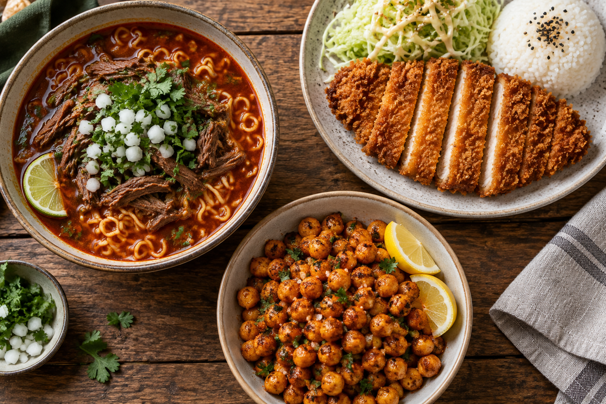
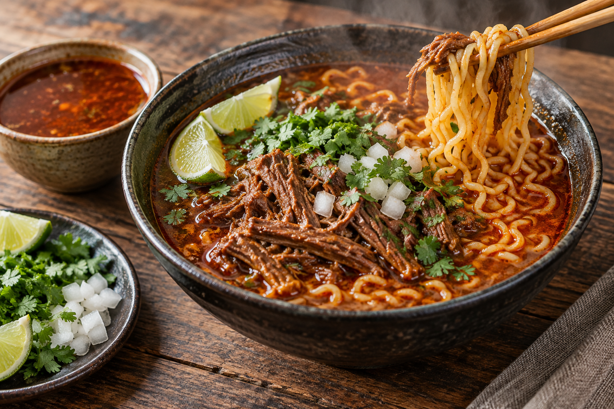
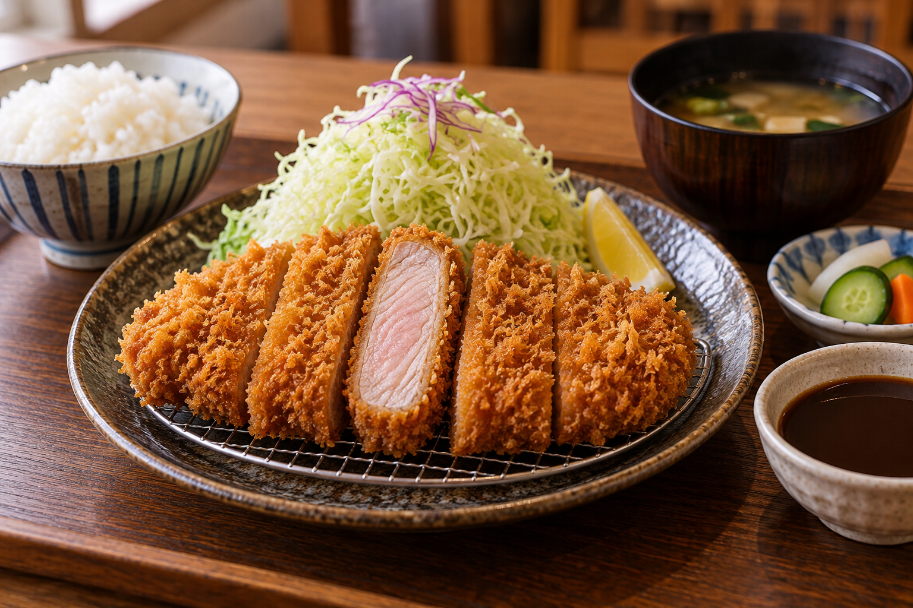
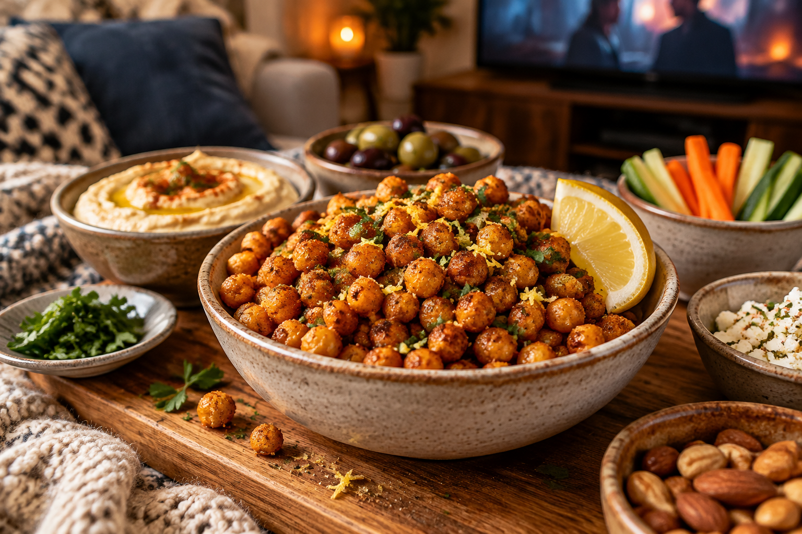
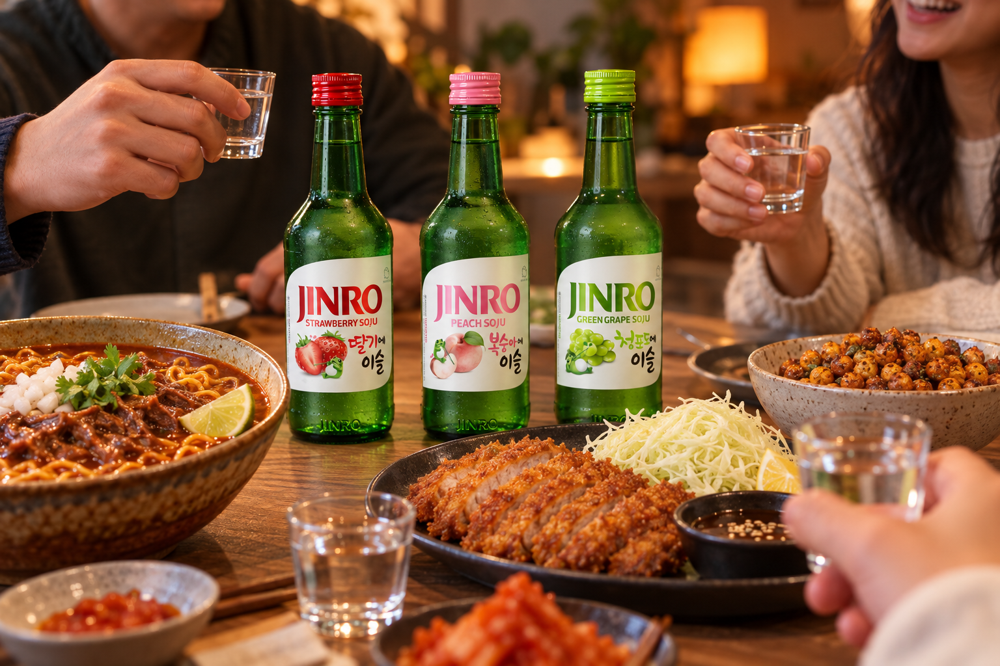

2027 Food Trends Just Dropped, and JINRO Has the Pairings
Birria ramen, tonkatsu and crispy chickpeas: here are three 2027 food trends to try now, plus a JINRO flavor for each.
What happens when you mash two iconic dishes into one? Or when an ingredient you already know gets a brand-new pairing?
Whole Foods Market just released its 2027 Food Trends Predictions, and it reads like a menu for the year ahead: fusion dishes, Japanese-Western comfort food and beans in the spotlight.
Here are three trends to put on your radar, plus the JINRO fruit flavor that goes with each.

1. Dish Reinvention: Birria Ramen
What if your two favorite foods became one dish? That is the idea behind Dish Reinvention, one of the trends on the 2027 list.
Think burger-meets-taco or cinnamon-roll-meets-focaccia. Chefs and home cooks are combining familiar flavors in ways nobody saw coming.
The one to try first is birria ramen.
Birria is a Mexican dish of meat slow-cooked with spices until the broth turns rich and aromatic. Add ramen noodles, and you get one bowl that brings both cultures together.
The noodles soak up the spiced broth, and the tender meat makes every bite comforting. Top it with diced onion and cilantro, then squeeze in some lime to brighten it up.

2. The Yōshoku Effect: Tonkatsu
When you think of Japanese food, sushi, ramen or tempura might come to mind first. But another style of cooking is having its moment: yōshoku, or Japanese-style Western food.
Yōshoku dishes started from Western recipes and became classics of their own in Japan. Think omurice, Japanese curry rice and Napolitan spaghetti.
The one you cannot skip is tonkatsu, a Japanese pork cutlet.
The pork is coated in flour, egg and panko, then fried until golden and crispy, while the inside stays juicy and tender.
Serve it with shredded cabbage, hot rice and tangy-sweet tonkatsu sauce for the classic set.

3. The Bean Boom: Crispy Chickpeas
Beans are not just for soups and salads anymore. Whole Foods Market calls this trend the Bean Boom, with beans showing up in more creative dishes and snacks.
They are affordable, versatile and full of plant-based protein and fiber.
The easiest one to try at home is crispy chickpeas.
Drain and dry a can of chickpeas, toss them with olive oil, smoked paprika, garlic powder and a pinch of salt, then roast until golden. For a brighter flavor, add lemon zest or a squeeze of lemon right before serving.
Eat them as a snack, or toss them onto salads and snack boards for extra crunch.

Match the 2027 Food Trends with JINRO
Each of these dishes goes well with a different JINRO fruit flavor. If you would like to pair them with JINRO, choose one and serve it chilled.
Birria Ramen × JINRO Strawberry
The sweet strawberry flavor of JINRO Strawberry balances the rich, spiced broth and gives you a light, fruity reset between bites.
Tonkatsu × JINRO Peach
JINRO Peach brings a juicy peach note that goes well with crispy tonkatsu and its tangy-sweet sauce.
Crispy Chickpeas × JINRO Green Grape
The fresh flavor of JINRO Green Grape plays off the smoky spices and salt. Add a little lemon to the chickpeas and the pairing gets even brighter.

Which 2027 Food Trend Will You Try First?
These trends show that your next favorite meal might be a familiar dish with a new twist. No fancy cooking skills needed.
The same goes for JINRO fruit flavors. Pair them with different dishes and you might find a combination you did not expect.
Tell us which trend you are trying first, and follow JINRO for more pairing ideas.
To discover more Korean food stories and JINRO pairings, visit JINRO Global’s official Instagram, Facebook, and YouTube.
The food trends in this article are based on Whole Foods Market’s 2027 Food Trends Predictions. JINRO pairings are editorial suggestions only and do not represent an official recommendation by, or partnership with, Whole Foods Market. This article is intended for readers of legal drinking age. Please enjoy JINRO responsibly and in moderation, and never drink and drive.